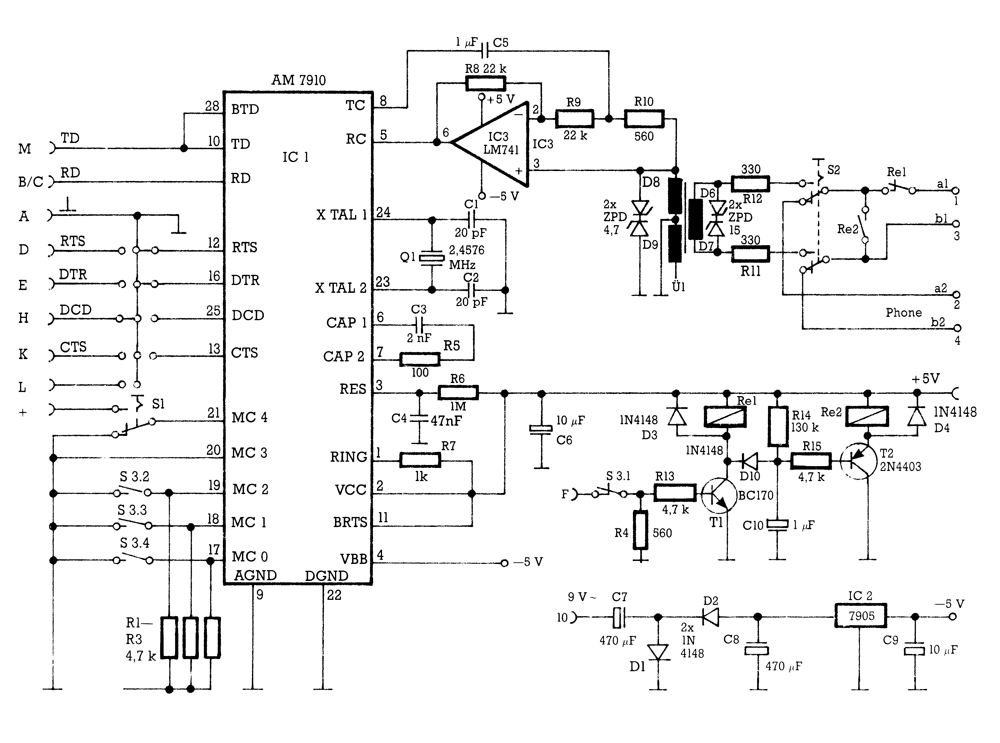
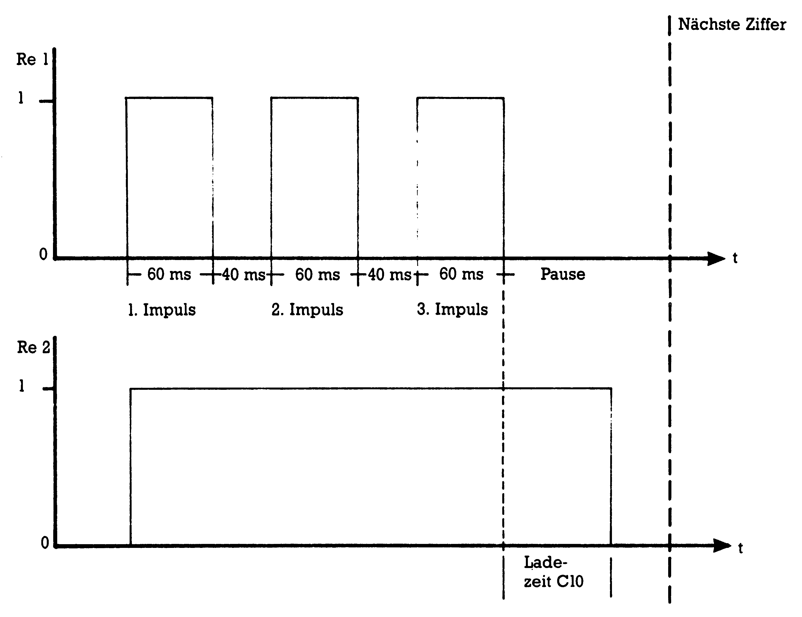
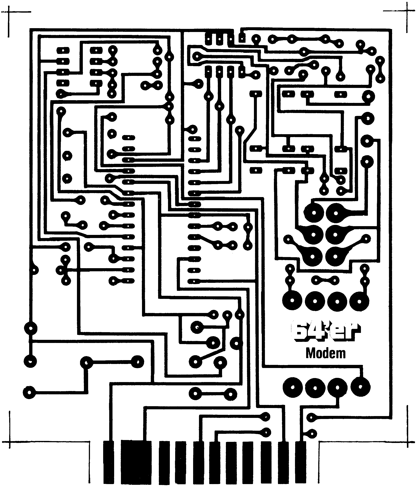
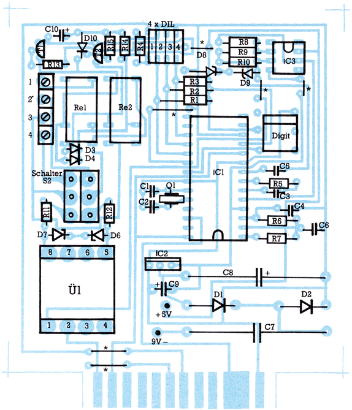

Modem mit Wählautomatik
In der Ausgabe 11/85 hatten wir zu einem Hardware-Wettbewerb aufgerufen. Viele Einsendungen sind uns zugegangen. Wir haben für Sie die beste Hardware herausgesucht und stellen sie Ihnen hier vor.
Viel Mühe hat es uns gekostet, alle Einsendungen zu beurteilen. Aber hier ist der eindeutige Sieger! Ein Telefon-Modem mit interessantem Service, denn der Computer kann für Sie auch das Wählen übernehmen. Entwickelt haben das Modem Werner Deppert und Hilmar Peimann. Aber nun zur technischen Seite.
Um mit Ihrem Computer Daten über das Telefonnetz zu übertragen, brauchen Sie ein sogenanntes Modem (Modulator/Demodulator).
Man unterscheidet zwei unterschiedliche Typen: das akustisch gekoppelte und das galvanisch gekoppelte Modem. Beim ersten Typ werden die Daten mit Mikrofon und Lautsprecher am Telefonhörer übertragen. Ein Beispiel für diese Modemart ist der Akustikkoppler. Galvanisch gekoppelt sind die Modems der Post. Diese werden über einen Trafo an das Telefonnetz angeschlossen. Die Post verlegt dazu in der Regel eine Modem-Steckdose. Dieses Selbstbaumodem arbeitet ähnlich dem Postmodem. Da es keine FTZ-Nummer hat, darf es allerdings nur an Telefonanlagen angeschlossen werden, die keinen Zugang zum postalischen Fernsprechnetz haben.
Welche Vorteile bietet ein direkt mit der Übertragungsleitung verbundenes Modem? Nun, alle störenden Einflüsse bei der elektroakustischen Wandlung fallen weg. Auch die im Telefonapparat eingebaute Schaltung wird umgangen. Auf diese Weise reduziert sich die Fehlerwahrscheinlichkeit bei der Datenübertragung auf ein Minimum. Zeitraubende Korrekturen der per DFÜ übertragenen Computer-Programme gehören nun der Vergangenheit an.
So funktioniert das Modem
Das Herz der Schaltung (Bild 1) ist das IC1 (AM 7910). Dieser Modem-Chip übernimmt die Modulation der Trägerfrequenzen, die Frequenzumschaltungen und verwaltet das Handshake-Protokoll. Eine Beschreibung der Signale an den An-schlußpins des Modem-ICs finden Sie in der Tabelle 1.

| Transmitted Carrier | (Pin 8): Dies ist das modulierte Ausgangssignal, das auf die Telefonleitung gegeben wird. |
| Received Carrier | (Pin 5): Von der Telefonleitung kommendes Eingangssignal; es wird im Modem-IC verarbeitet. |
| Ring | (Pin 1): Der Ring-Eingang bleibt in unserem Fall unbeschaltet, denn nur im galvanischen Modembetrieb dient das Wecker-Anruf-Signal des Telefons dazu, das Modem in den Antwort-Modus zu schalten. |
| Reset | (Pin 3): Mit Hilfe des IC-Gliedes wird an diesem Eingang beim Einschalten der Betriebsspannung ein Reset-Impuls erzeugt. |
| Cap1 und Cap2 | (Pin 6 und 7): Dies sind die Anschlüsse für die externe Beschaltung des im Chip integrierten A/D-Wandlers. |
| XTAL1 und XTAL2 | (Pin 23 und 24): Eingänge für das benötigte Taktsignal von einem Quarzoszillator (Q1); die Taktfrequenz beträgt 2,4576 MHz. |
| Data Terminal Ready | (Pin 16): Dieses vom Terminal kommende Signal zeigt dessen Betriebsbereitschaft an. Es muß solange logisch 0 bleiben, wie Daten zwischen Terminal und Modem ausgetauscht werden. |
| Request To Send | (Pin 12): Das Signal veranlaßt das IC, in den Sende-Modus umzuschalten, es muß während der Sendung logisch 0 bleiben. |
| Back Request To Send | (Pin 11): Schaltet beim Betriebsverfahren V.23-ORIG den Rückkanal in den Sende-Modus um. RTS und BRTS dürfen nicht gleichzeitig logisch 0 sein. Bei V.21 hat das Signal keine Bedeutung. |
| Transmitted Data | (Pin 10): An diesen Eingang wird das Datensignal gelegt, das über die Telefonleitung gesendet werden soll. |
| Back Transmitted Data | (Pin 28): Eingang für Daten, die für den Rückkanal bestimmt sind. Nur beim Betriebsverfahren V.23-ORIG; anderenfalls muß BTD logisch 1 sein |
| Received Data | (Pin 26): Von diesem Ausgang gelangen die empfangenen Daten zum Terminal. |
| MC0…MC4 | (Pin 17…21): Die logischen Signale an diesen Eingängen bestimmen das Betriebsverfahren. Hier sind nur die Eingänge MC0, MC1 und MC2 mit dem DIL-Schalter verbunden, weil lediglich die Standards V.21 und V.23 bei unserem Modem verwendet werden. Die Schalterstellungen entnehmen Sie bitte der Tabelle 3. |
Für die Datenübertragung sind die beiden Anschlüsse des Modem-ICs RC (Received Carrier) und TC (Transmitted Carrier) über eine Gabelschaltung mit dem Übertrager verbunden. Das zu sendende Signal gelangt über den Kondensator C5 und den Widerstand R10 zum Übertrager. Da der für den Empfang notwendige Operationsverstärker (IC3) das Differenzsignal zwischen seinen beiden Eingängen (Pin 2 und 3) verstärkt und R10 im Vergleich zur Trafo-Impedanz niederohmig ist, gelangt das Sende-Signal nur sehr stark gedämpft zum Eingang des Modem-Chips (RC) zurück. Ankommende Signale erzeugen dagegen ein Differenzsignal an den Eingängen von IC3, denn der Ausgang (TC) von IC1 ist für ankommende Signale niederohmig. Das durch den Operationsverstärker aufbereitete Empfangssignal wird dem Eingang des Modem-Chips (RC) zugeführt.
Die vier Z-Dioden neben dem Übertrager Ü1 sorgen dafür, daß eventuell auftretende Spannungsspitzen gekappt werden und damit eine Zerstörung von elektronischen Bauteilen verhindert wird.
Mit dem Schalter S2 können Sie zwischen Modem und Telefon umschalten.
Für die Anwahl der Gegenstelle sind die Relais Rel und Re2 zuständig. Angesteuert über den Pin F des Expansion-Ports taktet Rel beim Wählvorgang im Rhythmus der Wählimpulse, während Re2 gleichzeitig die Übertragereinrichtung des Telefonapparates kurzschließt. So werden lästige Knack- und Störgeräusche im Handapparat unterbunden.
Es wird gewählt
Sicher fragen Sie sich, wie zwei Relais mit unterschiedlichen Wirkungsweisen, an einem Eingang (Pin F Userport) zu betreiben sind. Es geschieht folgendermaßen: Mit dem Beginn des ersten Wählimpulses entlädt sich auch der Kondensator C10 über den Transistor T1 und steuert T2 auf. Das Relais Re2 zieht an und hält sich durch die nachfolgenden Impulse über die Wählzeit einer Ziffer. Erst wenn sich während der Pause bis zur nächsten Ziffer C5 über R14 wieder aufgeladen hat, fällt auch Re2 ab. Im Bild 2 haben wir den Zusammenhang zwischen Rel und Re2 für Sie grafisch dargestellt, am Beispiel der Ziffer 3. Es sollte noch gesagt werden, daß das Impuls-/Pausen-Verhält-nisbeiRel etwa 1,5:1 beträgt. Während der Impulse einer Ziffer entspricht dies einer Impulszeit von 60 Millisekunden und einer Pausenzeit von 40 Millisekunden.

Terminalprogramm mit Wählautomatik
Ein sehr gutes Terminalprogramm für den C 64 ist zweifellos »Proterm-64/XT«. In unserem Sonderheft 7/86 stellten wir Ihnen das Programm auf der Seite 44 vor. Wir haben das Terminalprogramm für Sie so umgeschrieben, daß es automatisch den ausgesuchten Anschluß anwählt. Dadurch ist es eine ideale Ergänzung zu dem Modem. Ein kleiner Nachteil mußte aus Platzgründen jedoch in Kauf genommen werden. Unter »F2« läßt sich jetzt nur noch die Schriftfarbe verändern, nicht mehr die Rahmen- und Hintergrundfarben.
Wenn Sie uns unter dem Kennwort »Proterm-64/XTW« einen mit Ihrer Adresse und Briefmarke (1,90 Mark) versehenen Rückumschlag (DIN A5) einschicken, senden wir Ihnen das neue Listing zu. Besitzen Sie »Proterm-64/XT« allerdings schon und verfügen über einen Monitor wie »SMON«, dann können Sie das Programm in kurzer Zeit selbst umschreiben. Hier die Anleitung dazu:
Laden Sie zunächst den Monitor in den Speicherbereich ab $C000. Dann laden Sie »Proterm-64/XT« und starten mit SYS 49152 den Monitor. Die folgenden Speicherstellen müssen Sie nun mit den angegebenen Werten überschreiben.
0EA5 EA NOP bis OEAE EA NOP
OEBB EA NOP bis 0ED2 EA NOP
1E15 20 00 23 JSR 2300 1E18 EA NOP (Sprung zur Wählroutine)
1EC0 58 1EC1 54 1EC2 57 (Einschaltmeldung »XTW«)
Geben Sie nun das Maschinenprogramm aus Listing 1 ein. Die einzelnen Programmteile haben folgende Bedeutung:
2290 — 22BA prüfen, ob Ziffer oder Zeichen
22C5 - 22FF wählen
2300 — 2310 Register retten
2313 - 231D Zeit
231E — 231F Register zurück
2300 — 233D prüfen, ob Wählautomatik eingeschaltet ist.
,2290 B1 63 LDA (63),Y ,2292 C9 31 CMP #31 ,2294 F0 25 BEQ 22BB ,2296 C9 32 CMP #32 ,2298 F0 21 BEQ 22BB ,229A C9 33 CMP #33 ,229C F0 1D BEQ 22BB ,229E C9 34 CMP #34 ,22A0 F0 19 BEQ 22BB ,22A2 C9 35 CMP #35 ,22A4 F0 15 BEQ 22BB ,22A6 C9 36 CMP #36 ,22A8 F0 11 BEQ 22BB ,22AA C9 37 CMP #37 ,22AC F0 0D BEQ 22BB ,22AE C9 38 CMP #38 ,22B0 F0 09 BEQ 22BB ,22B2 C9 39 CMP #39 ,22B4 F0 05 BEQ 22BB ,22B6 C9 30 CMP #30 ,22B8 F0 03 BEQ 22BD ,22BA 60 RTS --------------------------------- ,22BB E9 0A SBC #0A ,22BD E9 26 SBC #26 ,22BF 8D 58 23 STA 2358 ,22C2 4C 31 23 JMP 2331 --------------------------------- ,22C5 8D 03 DD STA DD03 ,22C8 8D 01 DD STA DD01 ,22CB A9 00 LDA #00 ,22CD 8D 01 DD STA DD01 ,22D0 20 13 23 JSR 2313 ,22D3 A9 08 LDA #08 ,22D5 8D 01 DD STA DD01 ,22D8 20 13 23 JSR 2313 ,22DB A9 00 LDA #00 ,22DD 8D 01 DD STA DD01 ,22E0 A2 20 LDX #20 ,22E2 20 15 23 JSR 2315 ,22E5 AD 58 23 LDA 2358 ,22E8 AA TAX ,22E9 CA DEX ,22EA 8A TXA ,22EB 8D 58 23 STA 2358 ,22EE D0 E3 BNE 22D3 ,22F0 A2 01 LDX #01 ,22F2 20 15 23 JSR 2315 ,22F5 A2 01 LDX #01 ,22F7 20 15 23 JSR 2315 ,22FA A2 FF LDX #FF ,22FC 20 15 23 JSR 2315 ,22FF 60 RTS --------------------------------- ,2300 48 PHA ,2301 8A TXA ,2302 48 PHA ,2303 98 TYA ,2304 48 PHA ,2305 AD 01 DD LDA DD01 ,2308 48 PHA ,2309 AD 03 DD LDA DD03 ,230C 48 PHA ,230D 20 90 22 JSR 2290 ,2310 4C 1E 23 JMP 231E --------------------------------- ,2313 A2 30 LDX #30 ,2315 A0 FF LDY #FF ,2317 88 DEY ,2318 D0 FD BNE 2317 ,231A CA DEX ,231B D0 F8 BNE 2315 ,231D 60 RTS --------------------------------- ,231E 68 PLA ,231F 8D 03 DD STA DD03 ,2322 68 PLA ,2323 8D 01 DD STA DD01 ,2326 68 PLA ,2327 A8 TAY ,2328 68 PLA ,2329 AA TAX ,232A 68 PLA ,232B E8 INX ,232C C8 INY ,232D C0 28 CPY #28 ,232F 60 RTS --------------------------------- ,2330 EA NOP ,2331 A9 00 LDA #00 ,2333 8D 03 DD STA DD03 ,2336 AD 01 DD LDA DD01 ,2339 29 08 AND #08 ,233B F0 02 BEQ 233F ,233D 60 RTS --------------------------------- ,233E EA NOP ,233F A9 08 LDA #08 ,2341 4C C5 22 JMP 22C5
Nachdem Sie alles eingegeben haben, verlassen Sie den Monitor mit »X« und speichern das Programm mit SAVE " PROTERM-64/XTW ",8. Jetzt haben Sie Ihr neues Terminalprogramm auf Diskette. Starten Sie auf keinen Fall das Programm vor dem Speichern.
Das Modem wird gebaut
Wenden wir uns nun dem Aufbau des Modems zu. Ein Modem kann nur die von der Post gestellten Aufforderungen erfüllen, wenn bestimmte Vorschriften eingehalten werden, was ein Selbstbau-Modem aber nicht macht.
Dies sollten Sie beachten. Nachdem Sie die Platine mit Hilfe des Layouts (Bild 3) hergestellt und anschließend gebohrt haben, geht es daran, sie zu bestücken. Das Bild 4 zeigt Ihnen den Bestückungsplan. Die notwendigen Bauteile können Sie der Stückliste (Tabelle 2) entnehmen. Am zweckmäßigsten beginnen Sie mit dem Einlöten der Drahtbrücken. Die ICs sollten Sie auf jeden Fall sockeln. Ohne eine Fassung werden die Relais eingelötet. Achten Sie darauf, daß die Anschlußklemmleiste auf der Rückseite geschlossen ist. Bei beidseitig offenen Klemmleisten kann das metallische Gehäuse des dicht dahinterliegenden Relais leicht einen Kurzschluß verursachen. Sollten Sie keine Klemmleiste mit vier Anschlüssen bekommen, dann können Sie eine längere Klemmleiste entsprechend absägen.
| Stückliste | ||
|---|---|---|
| ICs | ||
| 1 | AM7910 oder AM7911 | IC1 |
| 1 | 7905 | IC2 |
| 1 | LM741 | IC3 |
| Halbleiter | ||
| 1 | BC107 oder ähnlich (NPN) | T1 |
| 1 | 2N4403 (PNP) | T2 |
| 5 | 1N4148 | D1, D2, D3, D4, D10 |
| 2 | ZPD4,7 | D8, D9 |
| 2 | ZPD15 | D6, D7 |
| Widerstände | ||
| 1 | 100 Ω | R5 |
| 2 | 330 Ω | R11, R12 |
| 2 | 560 Ω | R4, R10 |
| 1 | 1 kΩ | R7 |
| 5 | 4,7 kΩ | R1, R3, R13, R15 |
| 2 | 22 kΩ | R8, R9 |
| 1 | 130 kΩ | R14 |
| 1 | 1 MΩ | R6 |
| Kondensatoren | ||
| 2 | 20pF | C1, C2 |
| 1 | 2nF | C3 |
| 1 | 47nF | C4 |
| 2 | 1μF | C5, C10 |
| 2 | 10μF/25V Elko | C6, C9 |
| 2 | 470μF/40V Elko | C7, C8 |
| Sonstiges | ||
| 1 | User-Port-Stecker | |
| 1 | Quarz 2,4576 MHz | Q1 |
| 1 | Übertragerspule Ü1 (Fa. Steinkühler, Herford, Best. Nr. 210 051) | |
| 2 | Siemens-Kleinrelais Re1, Re2 Typ V23040-A0001-B201 5V- | |
| 1 | Mini.-Kippschalter, 2 x Um S2 | |
| 1 | Digitaster, S1 | |
| 1 | Vierfach-DIL-Schalter | |
| 1 | Anschlußklemmleiste 4polig für gedruckte Schaltungen (Rückseite geschlossen) | |
| 1 | IC-Fassung 28polig | |
| 1 | IC-Fassung 8polig | |


Die keramischen Kondensatoren 01 und C2 müssen Sie wahrscheinlich flach auf die Platine biegen, um den Quarz einzulöten. Die beiden Dioden D3 und D4 werden stehend eingelötet.
DerUser-Port-Steckerwird mit der unteren Kontaktleiste auf die Platine gelötet (Kontakte A bis N). Für die notwendige 9V-Wechselspan-nung verbinden Sie über ein Kabelstück den Pin 10 oder 11 des User-Port-Steckers mit dem Lötstützpunkt bei Kondensator 07. SX 64-Besitzern sei gesagt, daß die 9V bei vielen Geräten nicht an Pin 11 herausgeführt wird. Aber an Pin 10 ist die Spannung vorhanden. Die +5V (Pin 2) werden mit dem Lötstützpunkt bei C9 verbunden.
Das Modem-IC (AM 7910) erhalten Sie beispielsweise bei HW-Elektronik, Eims-büttler Chaussee 79, 2000 Hamburg 19 (Preis: etwa 85 Mark). Ehe Sie das IC1 einsetzen, kontrollieren Sie unbedingt die negative Spannungsversorgung (-5V). Es wäre schade, wenn durch einen kleinen Fehler der AM 7910 beschädigt würde. Deshalb empfehlen wir, die Lötstellen und Polaritäten der Bauteile noch einmal zu überprüfen.
Erst testen, dann einschalten!
Achten Sie besonders auf die Polung der Kondensatoren C8 und C9. Sie müssen mit dem Pluspol an Masse liegen. Anschließend können Sie das Modem in den User-Port stecken. Nach dem Einschalten des Computers müssen an Pin 4 des IC-Sockels (IC1) -5 Volt gegen Masse zu messen sein. Ist dies der Fall, dann schalten Sie den Computer wieder aus und setzen das IC 1 ein.
Nun ist es endlich so weit. Das Modem wird in den User-Port eingesteckt und der Rechner eingeschaltet. Laden Sie jetzt das kleine Basic-Programm »Modemtest« (Listing 2) und starten Sie es. Halten Sie den Digitaster auf der Platine gedrückt, und betätigen Sie gleichzeitig die Tasten auf dem C 64. Erscheinen die gedrückten Tasten auf dem Bildschirm, so haben Sie die Gewähr, daß zumindest das Modem-IC richtig angeschlossen ist. Der Digitaster (S1) ist ausschließlich für diesen Eigentest gedacht.
10 REM ****** MODEMTEST ******** <238> 20 OPEN 1,2,0,CHR$(6+32+128)+CHR$(224) <004> 30 PRINT CHR$(14);CHR$(147);"(8SPACE)V24-M ODEMEIGENTEST" <025> 40 GET A$:IF A$=""THEN 80 <114> 50 A%=ASC(A$):B%=0:IF A%<91 AND A%>64 THEN B%=32 <204> 60 IF A%=20 THEN A%=8 <149> 70 A%=A%+B%:PRINT#1,CHR$(A%); <066> 80 GET#1,B$:IF B$=""THEN 40 <002> 90 B%=0:A%=ASC(B$):IF A%>91 AND A%<64 THEN B%=128 <048> 100 IF A%=96 THEN A%=A%-32 <108> 110 IF A%=8 THEN A%=20 <024> 120 A%=A%+B%:PRINT CHR$(A%);:GOTO 40 <086> 130 REM IN ZEILE 1 WERDEN DIE <248> 140 REM UEBERTRAGUNGSPARAMETER FEST- <040> 150 REM GELEGT 'CHR$(224)' <019> 160 REM 300 BIT/S, 7 DATENBITS, <119> 170 REM 2 STOPPBITS, VOLLDUPLEX, <154> 180 REM KEIN HANDSHAKE, KEINE PARITY- <090> 190 REM PRUEFUNG UND 8. BIT=0 <027>
Und hier noch ein Tip: Es kann bei der Inbetriebnahme vorkommen, daß der Quarz (Ql) nicht richtig anschwingt. Das läßt sich jedoch ändern, indem Sie für einen der beiden Kondensatoren Cl, C2 einen etwas größeren oder kleineren Wert wählen, beispielsweise 18pF oder 22pF.
Das Modem im Betrieb
Wenn Sie das fertig aufgebaute Modem an eine Haustelefonanlage anschließen, schalten Sie zuerst den DIL-Schalter 1 ein (wählen ein) und richten den Knebel von S2 vorn Übertrager weg (Modem ein, Telefon aus). Die Funktionen der DIL-Schalter finden Sie übrigens in der Tabelle 3 beschrieben. Als nächstes schrauben Sie die zwei ankommenden Drähte unter die Klemmen 1 und 3 (al und bl). Die beiden Ausgänge a2, b2 (Klemme 2 und 4) werden mit den Leitungen zum Telefon (in der Regel sind die Adern weiß und braun) verbunden.
| Funktionsbelegung der DIL-Schalter | |||
|---|---|---|---|
| DIL 1: | Wählautomatik ein/aus | ||
| DIL 2: | Steuersignal CCITT/Bell | ||
| DIL 3: | Steuersignal 300/1200 bit/s | ||
| DIL 4: | Steuersignal Originate/Answer | ||
| Steuereingänge | |||
| DIL2 | DIL3 | DIL4 | Betriebsart |
| 0 | 0 | 0 | Bell 103 Originate, 300 bit/s Vollduplex |
| 0 | 0 | 1 | Bell 103 Answer, 300 bit/s Vollduplex |
| 0 | 1 | 0 | Bell 202 1200 bit/s Halbduplex |
| 0 | 1 | 1 | Bell 202 1200 bit/s Halbduplex mit Equalizer |
| 1 | 0 | 0 | CCITT V.21 Originate, 300 bit/s Vollduplex |
| 1 | 0 | 1 | CCITT V.21 Answer, 300 bit/s Vollduplex |
| 1 | 1 | 0 | CCITT V.23 Modus2, 1200 bit/s Halbduplex |
| 1 | 1 | 1 | CCITT V.23 Modus2, 1200 bit/s Halbduplex mit Equalizer |
Das Modem können Sie jetzt in den User-Port stecken. Laden Sie das Terminalprogramm »Proterm-64/XTW« und starten Sie es. Wie im Sonderheft 7/85 beschrieben, gelangen Sie über die Funktionstaste F4 in das Mailbox-Verzeichnis. Hier können Sie eine Mailbox aus Ihrer Datei »..param« heraussuchen. Wenn Sie nun die RETURN-Taste drücken, wird die in der Datei abgespeicherte Rufnummer automatisch gewählt.
Sichere Datenübertragung
Hat der Verbindungsaufbau geklappt, können Sie nun per Computer mit der Gegenstelle Daten austauschen. Ist die Verbindung nicht aufgebaut worden, so drücken Sie erneut eine beliebige Taste, dann F4 und RETURN. Es erfolgt eine erneute Anwahl.
Selbstverständlich steht es Ihnen frei, jedes beliebige Terminalprogramm zu benutzen. Nur müssen Sie dann auf das automatische Wählen verzichten.
(Deppert/Peimann/kn)